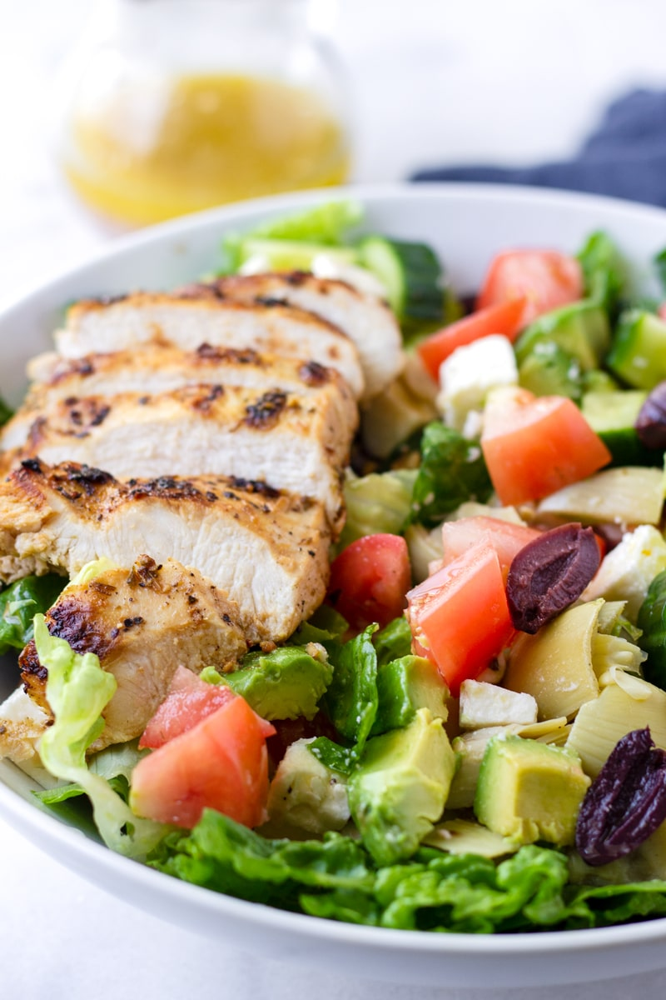

Fruit salsa pairs well with salmon and is
a breeze to make.
Salmon with Mango Salsa
Ingredients
2 ripe mangoes, peeled and cut into 1/2 inch cubes
2 tablespoon red bell pepper, diced
1/2 cup chopped red onion
1/2 cup chopped cilantro
juice from 2 limes
For the Salmon
4 (5-6 ounce) salmon fillets
Sea salt
Black pepper
2 tablespoons extra-virgin olive oil
Instructions
Make the salsa: Combine the mangoes, red bell pepper, onions, and
cilantro into a small bowl. Pour the lime juice over it and toss
Season the fish with teh salt and pepper. Heat the olive
oil in a 12 inch skillet over medium heat. Place two salmon
fillets in hot pan. Cook until the bottom begins to brown about
5 minutes. Flip and cook another 5 minutes until the fish is
flaky.
Repeat with the remianing fillets. Serve with salmon a
spoonful of salsa on top.
Curry Shrimp
A Thai classic that can be as spicy or
tame to suit your needs
Curry Shrimp
Ingredients
2 tablespoons extra-virgin olive oil
2 cups chopped broccoli
1 medium onion, chopped
1 large red bell pepper, chopped
1 tablespoon minced fresh ginger
2 cups coconut cream
2 tablespoons Thia red curry paste
1 tablespoon fish sauce
20 large shrimp, peeled and deveined
12 oz Cauliflower rice
Instructions
Heat the olive oil in a 12 inch skillet over medium-high
heat. Add the broccoli, onion, bell pepper, and ginger and saute
for 3 minutes.
Pour in the coconut cream, curry paste, and fish souce
and stir to blend in the curry paste. Add shrimp and cook until
opaque, about 3 minutes.
Serve over cauliflower rice.
.
Turkey Burgers
Classic burger that is perfect for lunch or picnics.
Turkey Burger
Ingredients
2 pounds ground turkey
1/2 cup minced onion
1/4 cup chopped cilantro
2 minced garlic cloves
1 teaspoon ground coriander
1 teaspoon ground cumin
1 teaspoon paprika
1/2 teaspoon ground black pepper
1/2 teaspoon sea salt
Instructions
Mix turkey meat, onion, cilantro, garlic, coriander, cumin, paprika, and black pepper.
Form half inch thick patties, season with sea salt.
Grill burgers over medium heat until cooked.

Avacado and Grilled Chicken salad with
Greek dressing
This Greek inspired salad is loaded with
your usual Greek salad ingredients with the addition of avocado
and grilled chicken.
Avacado and Grilled Chicken salad with Greek dressing
Ingredients
For the grilled Chicken
2 medium skinless boneless chicken breasts
1 tablespoon olive oil
1 ⁄2 teaspoon dried oregano
1 garlic clove crushed in garlic press
salt & pepper to taste
For the Salad
2 cup romaine lettuce chopped
1 avocado peeled pitted and chopped
1 cup cucumber chopped
cup cherry or grape tomatoes cut in half
1/2 red onion sliced thinly
1/4 cup pitted Kalamata olives
For the Dressing
1/4 cup olive oil
2 Tablespoons raw apple cider vinegar
juice of 1/2 lemon
1 small garlic cloves minced
1/2 teaspoon dijon mustard
1/2 teaspoon dried oregano
1/2 teaspoon salt
1/2 teaspoon black pepper
Instructions
Pound Chicken flat with a meat tenderizer or slice
chicken breasts in half to make them thinner. In medium bowl or
ziplock bag, combine the chicken, olive oil, oregano, garlic and
a sprinkle of salt and pepper. Heat a large heavy duty pan to
medium-heat and grill chicken 5-6 minutes per side until tender
and cooked through. Remove from pan, cool for 5 minutes then
slice or chop.
Combine all the ingredients for the dressing in a mason
jar and shake to combine. alternately, whisk i s a small bowl.
In a large bowl, combine all the chopped ingredients for
the salad. Top with chopped chicken a drizzle with generously
with dressing. Serve immediately.